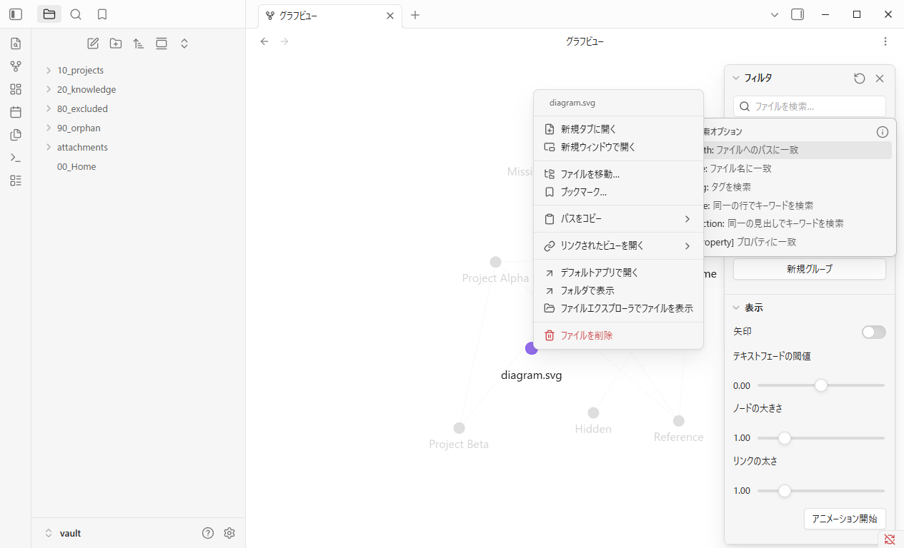
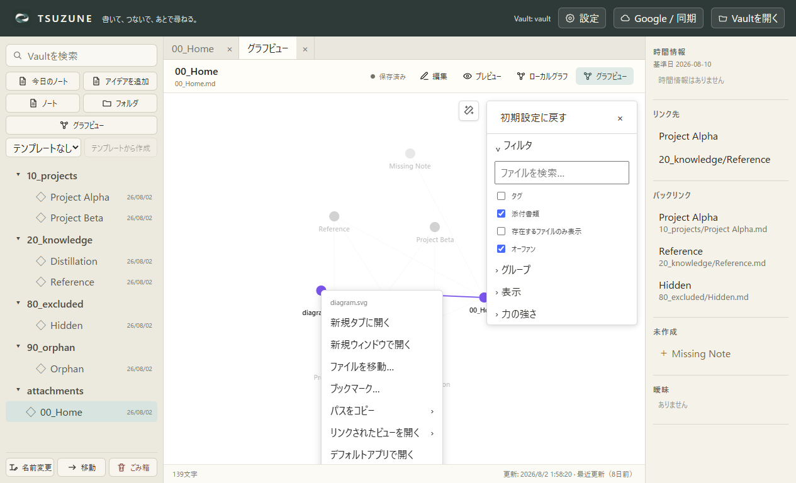
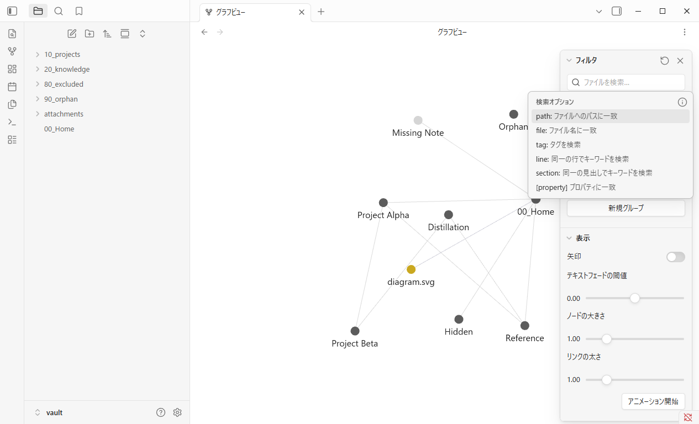
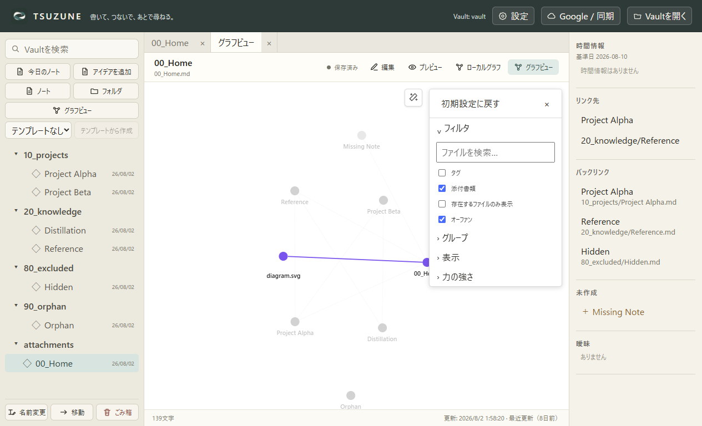

GP0-3b-n · 固定公開UI比較
添付を既定アプリへ渡す要求だけを、安全に固定する。
Obsidian Desktop 1.13.4とTSUZUNEを同じfixture、Global Graph、1265×768、DPR 1、ライトテーマで比較しました。外部アプリは実際には起動していません。
matched-core-behavior: default-app request
Context menu




比較
| 確認項目 | Obsidian | TSUZUNE | 判定 |
|---|---|---|---|
| 実在attachmentに「デフォルトアプリで開く」を有効表示 | true | true | matched |
| 同じrelative fixture file identityを外部open境界へ1回だけ要求 | window.open(file URL, "_external") | electron.shell.openPath(absolute filesystem path) | matched-core-behavior |
| 要求後にcontext menuを閉じ、Global Graphを保持 | true | true | matched |
| Graph再表示でrequestを再生せず、query・camera・node・edge・Graph workspace・Vaultを保持 | true | true | matched-core-behavior |
| 別process再起動時のrequest非再生 | 安全境界により未観測・未確立 | main import前hookで0回を追加確認 | product-extra-evidence |
| 添付nodeのcontext menu全体 | 11 | 8 | known-gap-outside-slice |
| OS既定appの選択・実起動・chooser／cancel | 未実行・未証明 | 未実行・未証明 | not-established |
証拠境界
中核一致は、同じrelative fixture file identityへのrequest 1回、menu close、Graph／Vault保持、同一process内のGraph再表示での非再生です。Obsidianはfile URL、TSUZUNEはabsolute filesystem pathを別のAPI seamへ渡します。OS既定appの選択・実起動とObsidianの別process再起動は証明していません。